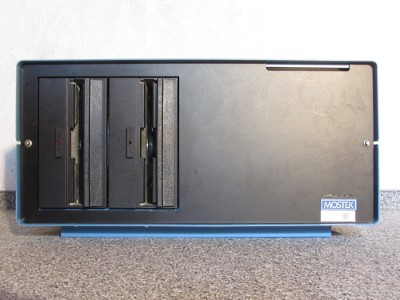
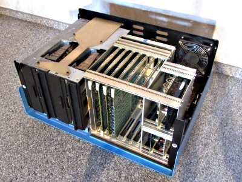
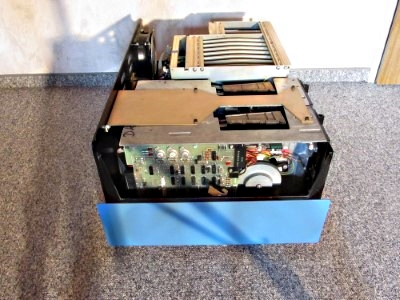

This Computer was a Microcomputer Mevelopment Systems called "SYS-80FT" made by Mostek and manuafactured in 1979. It is the European Version of the AIM-80F sold in America. Apparently both Computers werent very popular, there is a very limited amount of Information about this Computer on the Internet. I found a few catalogs that had Information about the Boards, but also one about the System. Also some small advertisements, but sadly I wasnt able to find a price for how much this System was sold at. Here are a few Pictures:


The System I own is equippped with a Monitor, Keyboard, EPROM-Programmer and a bunch of Floppy Disks. The Computer uses Eurocards with two 64-pin Connectors in the back, the bottom one is connected to a backplane which conects to all other cards and the top one is individually wired to the ports in the back or the floppy drives. The following Cards are currently installed:
| Name | Description | Specs | Picture |
|---|---|---|---|
| OEM-80E | This is the brain of the Computer, its essentially a single-board-computer. It has a bunch of useful functions like a user EPROM socket, a halt indicator and a switch to change the start adress, either from zero or from the EPROMs that handle the Monitor and Operating System. |
Z80 CPU 16K DRAM 4K ROM 110-9600 baud serial Interface 4 8-bit parralel ports Z80 CTC with 4 counter/timer channels Halt Lamp Restart start position switch |
 |
| RAM-80BE | This Card isnt very interesting, it only adds more RAM and four additional Parralel Ports to the System. |
48K DRAM 4 8-bit parralel ports |
 |
| FLP-80E | This card doesnt look like much, but it is responsible for one of the key functions of the system: the floppy drives. It uses the FD1771 as a floppy controller and everything else is handled by plain logic chips. |
soft sector compatible compatible with IBM 3740 format capable of up to 4 drives capable of double sided drives full sector buffering for data |
 |
| VDI-P | This is a very unique board. Its essentially a whole microcomputer which acts like a terminal. It uses the Fairchild F8 microcontroller(s) (MK3850 & MK3851) and communicates with the computer over a external serial connecion made to the OEM-80E. It interfaces with a normal ASCII keyboard (although I am unsure if the DB-25 connector in the back of the computer is a standard) and outputs video over RS170. |
24 lines x 80 char. display 5 x 8 dot matrix 110-9600 baud serial Interface suports all 128 ASCII characters capable of custom defined characters |
 |
| Custom V24 Board | This Card was made by the schoool I found it at. I assume this card was made to compensate the lack of general purpose serial ports, because the computer only offers four unassingned parralel ports. Its not installed currently, because I dont have the need for additional serial ports and dont know how to operate it exactly. |
two V24 serial Interfaces |  |
The power supply uses plug-in cards as well, although its not possible to exchange its position with another card because of the internal wiring. Also a quick overview:
| Voltage | Description | Specs | Picture |
|---|---|---|---|
| +5V | This is most certainly the heart of the Computer, it supplys power to almost every part of the Computer. It hasa giant heatsink in the back thats beeing heated by a MJ11015 200W transistor, a IN6096 diode and a full bridge rectifier. Besides of that, it also has a pretty extensive regualting circuit. |
Volatge: +5V Current: 15A |
 |
| ±12V | This is a pretty compact circuit that uses the LM317 and LM337 voltage regulators. It also has two LED's in the front to indicate that the two 12V lanes are working. -12V are used by the computer boards to generate -5V for RAM and ROM. |
Volatge: +12V Current: ~2A? Volatge: -12V Current: ~2A? |
 |
| +24V | This card is really simple, it only has a few components and a the 2N3055 used only has a small heatsink. The transistor is rated up to 15A, but the circuit is most likley not rated for such a high current. The +24V are not accessible on the computer boards, and are only used by the floppy drives. |
Volatge: +24V Current: ~2A? |
 |
The Computer uses two Shugart SA801 single sided 8 inch floppy disk drives for data storage. The first drive(A / DK0:) oddly is on the right side, while the second(B / DK1:) is on the left.
  I am very lucky that such a great amount of disks had survived, including Operating Systems and Programs. The System looks for a file called OS.BIN and uses this file to boot the operating system. A few disks are compatible with the CP/M format, while others use a format proprietary to the FLP-80DOS(It might be compatible with the IBM 3740 data entry system format, but I havent been able to check that). The following table shows most of the interesting software, I also wrote down which format it uses and supplied a download link so you can try it yourself.
| Name | Format | Company | Description | Download | Picture |
|---|---|---|---|---|---|
| FLP-80DOS | FLP-80DOS | MOSTEK | This was the first Operating system for this Computer and has been especially made for the FLP-80 disk controller. This is why it most likley will not work on any other System than Mostek ones. |
FLP-80DOS_MOSTEK.DSK |  |
| FLP-80DOS | FLP-80DOS | ENATECHNIK | This is essentially the same as the one above, but it says ENATECHNIK instead of MOSTEK. I assume this was supplied by the retailer who also sold this Computer. |
FLP-80DOS_ENATECHNIK.DSK |  |
| MOS-80 | CP/M | MOSTEK | Because of the fast rise of CP/M Mostek probably made a Operating System thats compatible with CP/M. This OS might be compatible with the CP/M format, but it can not directly run programs written for CP/M especially. |
MOS-80.DSK |  |
| MOS-80 | CP/M | MOSTEK | This is just a security copy of the original MOS-80 to avoid wearing the original disk. |
MOS-80_COPY.DSK |  |
| CP/M | CP/M | DIGITAL RESEARCH | This is a original disk that was suplied by Digital Research. Because it has not been modified it does not have the required OS.BIN file on it and thus it cant be used on this System. |
CPM2.2.DSK |  |
| CP/M | CP/M | DIGITAL RESEARCH | This Version of CP/M is bootable, i guess its a modified copy of the one above. |
CPM2.2_COPY.DSK |  |
| CP/M | CP/M | DIGITAL RESEARCH | This is the exact same Version as the one above. |
CPM2.2_SYS80F.DSK |  |
| CP/M Link | FLP-80DOS | ENATECHNIK | You might assume this is another version of CP/M, but this is just another FLP-80DOS instance; I assume there is some program that is able to communicate to CP/M on it. |
CPM-LINK.DSK |  |
| BASCOM-80 | CP/M | MICROSOFT | This Disk only has a few files on it, one of them is named BASCOM.BIN. This program is a compiler for BASIC programs, but I dont know how to operate this program. |
BASCOM-80.DSK |  |
| BASIC GAMES | FLP-80DOS | MICROSOFT | This floppy Disk has a BASIC interpreter made by Microsoft on it. It also has a great amount of BASIC-games on it, including 3D Tic-Tac-Toe, Nine Men Morris and a moon-landing-simulator. It also has a pre- comiled chess game called SARGON on it. |
BASIC-GAMES.DSK |  |
| BASIC INTERPRETER | FLP-80DOS | MICROSOFT | This has essentiallly the same content like the disk above, but some different BASIC-games on it. |
BASIC-INTERPRETER.DSK |  |
| PROMMER | CP/M | JANICH & KLAAS | This seems to be a tool to operate some kind of PROM programmer. It does NOT work with the programming device by Mostek, and i could not figure out how this tool is operated. |
PROMMER.DSK |  |
| WORD | FLP-80DOS | OLYMPIA-WERKE | This seems to be some kind of word processing program, but it doesnt seem to start without a Centronics Line Printer attached. |
WORD.DSK |  |